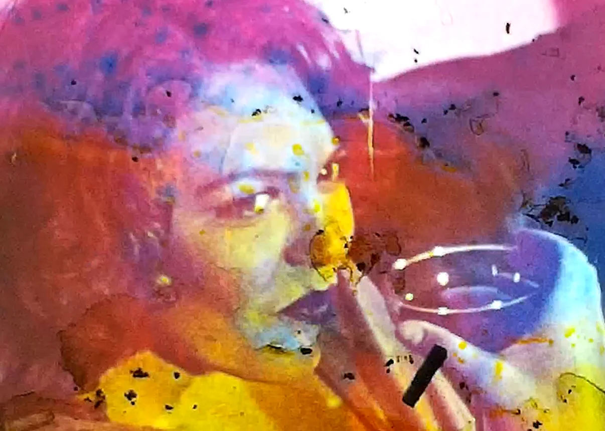

Chantal Partamian
Filmmaker & Archivist
Chantal Partamian is an experimental filmmaker and archivist with a focus on super 8mm and found footage. Her films, recognized and awarded at numerous festivals, are distributed through Vidéographe, Groupe Intervention Vidéo (GIV), and the Canadian Filmmakers Distribution Center.
As an archivist, Partamian specializes in preserving and restoring film reels from the Eastern Mediterranean through the project: Katsakh Mediterranean Archives, while also conducting research on archival practices in conflict zones. Her written works are primarily published in the Revue Hors-Champ.
Chantal Partamian's work spans both the artistic and archival realms, merging experimental cinema with preservation efforts to safeguard the cultural heritage of the Mediterranean region.
chantalpartamian@gmail.com